Глава 5. Настройка межсетевого экрана
Мы охватим следующие разделы в данной главе:
-
Настройку межсетевого экрана кластера
-
Настройку межсетевого экрана хоста
-
Настройку межсетевого экрана виртуальной машины
-
Интегрирование Suricata IPS
-
Используемые обычно команды CLI межсетевого экрана
-
Ведение журналов межсетевого экрана
Содержание
Возможности межсетевого экрана в Proxmox VE обеспечивают исключительное средство усиления безопасности в пределах виртуальной среды. Межсетевой экран строится на основе твердо установившейся технологии сетевой фильтрации (netfilter) на основе Linux. Сетевая фильтрация основывается на инфраструктуре фильтрации пакетов, в которой сетевые пакеты данных допускаются или отвергаются на основании множества установленных правил. Все правила определяются в табличных структурах в iptables.
![[Замечание]](../common/images/admon/note.png) | Замечание |
|---|---|
|
Для получения дополнительных сведений о сетевой фильтрации посетите http://www.netfilter.org/. {Прим. пер.: https://ru.wikipedia.org/wiki/Межсетевой_экран} |
Свойством межсетевого экрана в Proxmox также является отслеживание состояния в брандмауэре. Межсетевой экран с отслеживанием состояния не только фильтрует пакеты, но также постоянно поддерживает отслеживание состояние активных соединений, таких как протоколы TCP или UDP. Он также известен возможностью динамической фильтрации пакетов, которая проверяет соответствие правилам брандмауэра в характере активных соединений, обеспечивая лучшую защиту, чем простая фильтрация пакетов.
|
| Замечание |
|---|---|
|
Для получения дополнительных сведений о межсетевых экранах с отслеживанием состояния посетите https://en.wikipedia.org/wiki/Stateful_firewall. {Прим. пер.: https://ru.wikipedia.org/wiki/Stateful_Packet_Inspection}. |
Межсетевой экран Proxmox работает распределенным образом, причем основные настройки расположены в файловой системе кластера Proxmox, в то время как правила в iptables хранятся индивидуально в узлах Proxmox. Это обеспечивает изоляцию между виртуальными машинами, тем самым предоставляя большую пропускную способность чем в случае с централизованными параметрами межсетевого экрана.
Межсетевой экран Proxmox может быть настроен как посредством графического интерфейса Proxmox, так и через интерфейс командной строки. Графический интерфейс Proxmox предоставляет очень простую, дружественную пользователю среду для управления настройками брандмауэра.
|
| Замечание |
|---|---|
|
Отметим, что хотя межсетевой экран Proxmox и обеспечивает исключительную защиту, вы должны иметь физический межсетевой экран для всей сети. Такой брандмауэр также называется межсетевым экраном контура (edge firewall), поскольку он располагается в основной входной точке интернета. Интернет- соединение не должно напрямую соединяться с узлами Proxmox. Виртуальный межсетевой экран не должен применяться в качестве замены физического межсетевого экрана. |
В Proxmox мы можем установить межсетевой экран для всего уровня кластера, для уровней определенных узлов, а также для каждой виртуальной машины. Меню межсетевого экрана доступно для центра данных, узла, а также для зависимых от виртуальных машин закладок меню. Зарегистрируйтесь в графическом интерфейсе Proxmox, затем выберите в левой колонке навигации элемент, например, Datacenter, узел Proxmox или виртуальную машину, для отображения меню с закладками. Следующий экранный снимок показывает меню Firewall для Datacenter:
Для настройки межсетевого экрана в интерфейсе командной строки существуют некоторые файлы настроек подлежащие редактированию. Вот местоположения для файлов настроек межсетевого экрана для установок брандмауэра центра данных, узла и виртуальных машин:
| Файлы настроек | Местоположение |
|---|---|
Относящиеся к |
|
Относящиеся к |
|
Относящиеся к |
|
Вот компоненты, из которых состоит межсетевой экран Proxmox:
-
Zones (Зоны)
-
Security groups (Группы безопасности)
-
IPSets (Наборы IP)
-
Rules (Правила)
-
Directions (Направления)
-
Actions (Действия)
-
-
Macros (Макроопределения)
-
Protocols (Протоколы)
Зоны
В межсетевом экране Proxmox существуют две логические зоны, которые группируют все правила брандмауэра для всего входящего и исходящего обмена. Вот эти две зоны:.
-
Host: Правила в этой зоне определяют трафик в узел кластера Proxmox и из него
-
VM: Правила в этой зоне определяют трафик в виртуальную машину {контейнер} KVM и OpenVZ {Прим. пер.: для Proxmox VE v.4x LXC} кластера Proxmox и из него
Группы безопасности
Группа безопасности позволяет объединять несколько правил межсетевого экрана вместе в отдельные правила и делать их применяемыми к
любому узлу или виртуальной машине. Например, мы можем создать группу безопасности с именем webserver и
создать некоторые правила для открытия всех TCP портов стандартных веб- серверов, таких как 80, 443, 21, 22,
и тому подобные. Затем мы можем применить отдельную группу webserver к любому узлу или виртуальной
машине вместо создания индивидуальных правил. Приводимый ниже снимок экрана показывает созданную для
webserver группу безопасности для открытия портов протоколов
HTTP,
HTTPS,
SSH и
FTP:
Аналогично может быть создана другая группа безопасности с портами, например, IMAP/SMTP, для почтовых серверов. Группа безопасности делает идентичные создания правил для множества узлов или виртуальных машин более простым.
Наборы IP
В межсетевом экране можно применять правила брандмауэра к определенным IP адресам. Если одно и то же правило применяется ко многим IP
адресам, IPSet позволяет группировать IP адреса таким образом, что это одно правило может быть создано для всех IP адресов {набора}. Во многом
схоже с Security Group,
IPSet позволяет группировать множество IP адресов для создания
отдельного правила межсетевого экрана. При помощи IPSet мы можем
создавать наборы черных списков и белых списков для разрешения и запрета сетевого трафика.
Правила
Правила являются сердцевиной настройки межсетевого экрана. Благодаря правилам мы можем определять поток обмена и тип трафика который мы разрешаем или отвергаем. Существует только два направления (directions) в которых может протекать обмен:
-
In: Относится ко входящему трафику от внешних источников -
Out: Относится к исходящему из узла, кластера или виртуальной машины Proxmox трафику
Существует три типа действий, которые могут делать правила межсетевого экрана:
-
ACCEPT: делает возможными пакеты обмена -
REJECT: пакеты трафика принимаются, а затем отсылаются назад отправителю -
DROP: пакеты принимаются и затем молча пропускаются без отсылок каких- либо подтверждений их отправителю
Обычное правило выглядит следующим образом, как в файле настройки межсетевого экрана взятом из /etc/pve/firewall/100.fw
для виртуальной машины 100:
[RULES] IN ACCEPT –p tcp –dport 80
Это правило разрешает порт 80 и сетевой обмен на основе протокола TCP.
Следующий экранный снимок показывает правила в графическом интерфейсе Proxmox:
Иногда правила межсетевого экрана могут вступать в конфликт друг с другом из-за неверной настройки. Имейте в виду, что в таких случаях
любые правила, указанные первыми всегда имеют приоритет над более поздними правилами. Например, существует правило приема пакетов в порт
21, но есть еще одно правило отбрасывать все пакеты,приходящие в порт
21. В таком случае, брандмауэр будет всегда принимать данные в порт
21, так как это правило является первым. Примите во внимание подобные случаи.
Макроопределения
Межсетевой экран Proxmox предоставляет различные предопределенные настройки портов для большинства известных служб, таких как
BGP,
SSH,
Telnet,
MySQL,
NTP,
OpenVPN,
SMTP,
Squid и других, чтобы назвать только несколько.
Следующий экранный снимок показывает меню Macro в блоке диалога
настройки правил Firewall:
Макроопределения предоставляют быстрый способ создания правил межсетевого экрана при использовании портов служб по умолчанию. Например,
если вы применяете пользовательский номер порта 2202 для службы SSH, то макроопределение, задаваемое
по умолчанию не будет работать, поскольку оно будет создавать правила для порта SSH по умолчанию 22.
Выбранное макроопределение не даст возможности ввода пользовательских номеров порта. В Proxmox VE 3.4 мы не можем создавать пользовательские
макроопределения для применения в межсетевом экране Proxmox.
Протоколы
Межсетевой экран Proxmox разрешает правила на основе различных сетевых протоколов, таких как TCP, UDP, ICMP, EGP и так далее. В зависимости от
требований приложения необходимы различные выборы протокола. Например, если мы хотим разрешить ping для сервера, то протокол
icmp должен быть выбран вместо
tcp. Следующий снимок экрана показывает блок диалога правил
Firewall с ниспадающим меню
Protocol:
Хотя добавление брандмауэра Proxmox является стабильным и очень приемлемым вариантом для межсетевого экрана, он не должен быть использован
в качестве единственного брандмауэра для всей сети. Просто не существует замены для физического узла межсетевого экрана, отделенного от
остальной части сети, которая расположена в главной точке входа приходящего общественного подключения в Интернет. Это также является предметом
дискуссий, может ли виртуализированный брандмауэр занять место отдельного физического межсетевого экрана. Виртуализированной брандмауэр,
расположенный в том же кластере дает более широкую площадь атаки, чем одиночный физический межсетевой экран. Стоимость дорогих межсетевых
экранов могут быть смягчены с помощью брандмауэра с открытым исходным кодом, например,
pfSense, которые также может быть настроен как бесплатный межсетевой
экран кластера.
Характерные для кластера параметры межсетевого экрана воздействуют на все узлы и виртуальные машины в кластере. Существует
несколько задач, которые должны выполняться из меню Datacenter | Firewall.
-
Разрешение межсетевого экрана кластера
-
Управление группами безопасности
-
Управление наборами IP
Другие параметры межсетевого экрана, такие как Rules и
Alias могут быть настроены из параметра
Firewall хоста или виртуальной машины, поскольку они не воздействуют
на общую работу межсетевого экрана кластера.
Разрешение межсетевого экрана кластера
Чтобы иметь в наличии работающий межсетевой экран Proxmox, вначале необходимо включить его на уровне кластера.
Приготовление
Зарегистрируйтесь в графическом интерфейсе Proxmox в качестве root или любого другого с полномочиями администратора, а затем выберите из левой
панели навигации Datacenter.
Как это сделать...
Следующие шаги применяются для разрешения межсетевого экрана на весь кластер через графический интерфйес:
-
Кликните на
Firewallиз меню с закладкамиDatacenterдля открытия параметров межсетевого экрана. Следующий экранный снимок отображает состояние межсетевого экрана для новой установки Proxmox: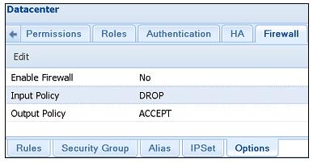
В настоящее время межсетевой экран запрещен.
Input Policyустановлена наDROPвсего входящего трафика, аOutput PolicyнаACCEPTвсего исходящего обмена. Чтобы иметь полную строгую изоляцию кластера,Input Policyдолжна быть оставлена в политикеDROPдо включения межсетевого экрана.Замечание Имейте в виду, что если не создано ни одного правила межсетевого экрана для разрешения обмена графического интерфейса Proxmox через порт
8006до включения межсетевого экрана кластера, то графический интерфейс станет недоступным после включения брандмауэра. В этом случае для разрешения доступа к графическому интерфейсу Proxmox правило может быть создано с использованием интерфейса командной строки. -
Чтобы изменить политику или разрешить/ запретить межсетевой экран, выберите элемент строки, а затем кликните на
Editдля открытия блока диалога. После внесения изменений кликните наOKв блоке диалога как показано ниже на снимке экрана: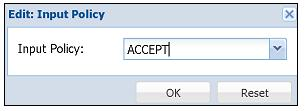
Следующие шаги требуются для разрешения через графический интерфейс межсетевого экрана на весь кластер. Они также полезны когда
межсетевой экран разрешен с входной политикой DROP при
не созданных правилах приема управляющего трафика для HTTP или SSH:
-
Зарегистрируйтесь через SSH или напрямую через консоль одного из узлов Proxmox если порт SSH блокирован.
-
Откройте редактором файл настроек межсетевого экрана в
/etc/pve/firewall/cluster.fw. -
Измените политику на
ACCEPTвсего трафика следующим образом:[OPTIONS] enable: 1 policy_in: ACCEPT -
Для сохранения политики сбрасывания всего обмена за исключением требуемого, внесите следующие изменения. В нашем примере мы отвергаем любой трафик за исключением SSH и графического интерфейса Proxmox:
[OPTIONS] enable: 1 policy_in: DROP [RULES] IN ACCEPT –p tcp –dport 22 IN ACCEPT –p tcp –dport 8006 -
Сохраните настройки и покиньте текстовый редактор. Не требуется никакая перезагрузка
Как это работает...
Все правила и политики, настроенные для межсетевого экрана ответственного за центр данных применяются ко всем узлам в нашем кластере.
Правила, которые применяются ко всем узлам, такие как доступ к графическому интерфейсу через порт 8006
или SSH доступ через порт 22 могут настраиваться один раз в конфигурации межсетевого экрана для всего
кластера. Это сохраняет время в сравнении с созданием правил для каждого узла.
Группы безопасности делают возможной группировку множеств правил в отдельное правило.
Приготовление
Зарегистрируйтесь в графическом интерфейсе Proxmox в качестве root или с любыми другими административными полномочиями, затем выберите меню с
закладками Datacenter | Firewall. Группы безопасности могут создаваться
и управляться только в меню Firewall. Группы могут применяться к
хостам или виртуальным машинам в их собственных меню Firewall.
Следующий снимок экрана показывает меню Security Group без
созданных групп:
Как это сделать...
-
Кликните на
Createдля открытия блока диалогаSecurity Group. -
Введите имя группы и описание, как показано на следующем экранном снимке, а затем кликните на
Create: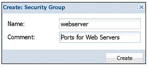
Выберите только что созданное имя группы, а затем кликните на
Addиз менюRules:с правой стороны экрана. Это откроет блок диалога для создания правил межсетевого экрана.Следующий снимок экрана показывает блок диалога с введенной информацией, позволяющей обмен HTTP через порт
80: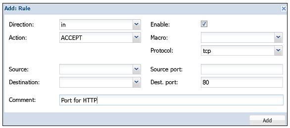
Поскольку правила будут применяться к различным серверам с различными IP адресами, мы не вводим никаких IP адресов отправителей и получателей.
-
Кликните на
Addпосле ввода всей необходимой информации для создания правила. -
Следуйте той же процедуре для создания других правил в той же группе.
Следующий экранный снимок показывает правила, созданные для разрешения HTTP, HTTPS, SSH и Ping для группы безопасности
webserver: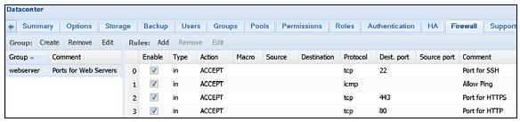
Управление наборами IP
Наборы IP (IPSets) делают возможной группировку множества адресов IP или IP диапазонов. Это полезно когда правила межсетевого экрана должны применяться к определенным IP адресам.
Приготовление
Зарегистрируйтесь в графическом интерфейсе Proxmox в качестве root или с любыми другими административными полномочиями, затем выберите меню с
закладками Datacenter | Firewall. Кликните на
IPSet внизу меню с закладками в окне межсетевого экрана.
Все созданные в меню межсетевого экрана центра данных наборы IP доступны для всех узлов и виртуальных машин в нашем кластере. Набор IP
созданный для виртуальной машины доступен только для виртуальной машины, для которой он создавался. Если вы хотите создать набор IP, который
можно будет выбирать для любого хоста или любой виртуальной машины в нашем кластере, создайте его зайдя в меню
Datacenter | Firewall | IPSet.
Как это сделать...
-
Перейдите в
IPSet | Createдля открытия блока диалога. Этот блок диалога создает только имя и описание набора IP. В нашем примере мы создаем набор IP для определения черного списка IP, как это отражено на следующем снимке экрана: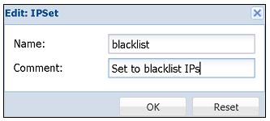
-
Выберите только что созданный набор IP и после этого кликните на
IP/CIDR. Кликните на ниспадающее менюIP/CIDRдля добавления адреса IP или диапазона. Например, мы помещаем в черный список вымышленный диапазон,24.123.123.0/24, как это отражено в следующем снимке экрана: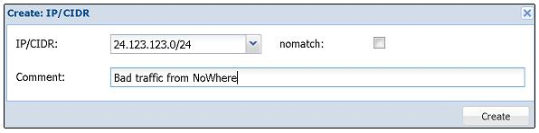
-
Для изменения имени набора или адресов IP в наборе, выберите необходимую строку и кликните на
Edit. -
Кликните на
Removeесли элемент выбран для удаления набора.
Данная настройка межсетевого экрана влияет только на узел Proxmox или на хост, на которых она выполняется.
Приготовление
В графическом интерфейсе Proxmox выберите узел и кликните на Firewall
в меню с закладками. Меню межсетевого экрана для хостов имеет три дополнительных меню с названиями
Rules,
Options и
Log.
Как это сделать...
-
Для разрешения межсетевого экрана для определенного хоста перейдите к
Node | Firewall | Options. Появятся параметры для только что установленного Proxmox как это показано на следующем снимке экрана: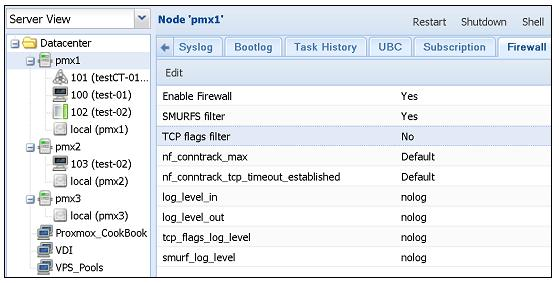
-
Для разрешения или запрета межсетевого экрана выберите
Enable Firewall, затем кликните наEdit. -
Аналогично, для изменения параметров в любой строке, выберите элемент и кликните на
Edit. -
Чтобы создать правило для межсетевого экрана особенного для хоста выберите закладку
Rule, а затем кликните наAddдля открытия блока диалога. -
Замечание Имейте в виду, что эти правила будут применены к определенному узлу на котором они создаются.
Отсылаем вас к разделу Управление группами безопасности в рецепте Настройка межсетевого экрана кластера ранее в этой главе для ознакомления с блоком диалога создания правила.
Чтобы применить уже созданные с применением
Security Groupправила кликните наInsert: Security Groupдля открытия блока диалога, как это показано ниже на снимке экрана: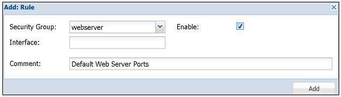
В нашем примере у нас есть выбранная
Security Groupс именем webserver, которая была создана в данной главе ранее. -
Оставьте
Interfaceпустым для применения этого правила ко всем интерфейсам данного узла. -
Кликните на кнопку- флажок
Enableдля активации данного правила или ее не отмеченной для активации позже. -
Наконец, кликните на
Addдля создания правила. Служба межсетевого экрана не будет перезапущена для активации изменения правила.Замечание Мы можем выполнить те же самые изменения через командную строку добавив в
/etc/pve/nodes/pmx1/host.fwследующую строку:[RULES] GROUP webserver # Default Web Server Ports
Как это работает...
Не существует никакой политики настройки ввода/ вывода межсетевых экранов, предназначенных для хостов. Она следует политикам настроек
межсетевого экрана предназначенного для центра данных в /etc/pve/firewall/cluster.fw. Однако, в настройке
межсетевого экрана предназначенного для хоста полезно переписать правила из брандмауэра центра данных. Не существует пределов на число правил
межсетевого экрана хоста.
Существуют блоки параметров Source и
Destination в блоке диалога создания правил которые необходимо уточнять в
дальнейшем, поскольку они имеют жизненно важное значение для правильной настройки межсетевого экрана. Ниспадающие меню
Source и
Destination применяются ко всему IP адресу или диапазону, в то время как
Source port и
Dest. port применяются только к перечисленным номерам портов. Например,
если мы хотим разрешить обмен только по порту 80 для статического IP адреса
192.168.1.10, тогда настройка будет выглядеть как на следующем снимке экрана:
Когда Direction установлен как
in, получателем будет узел Proxmox а источником будет внешний трафик.
Когда Direction установлен как
out, узел Proxmox становится источником , а получателем будет внешняя
сеть. Чтобы прояснить ситуацию, давайте рассмотрим другой пример. По его сценарию мы хотим, чтобы узел Proxmxox с IP адресом
172.16.0.71 не разрешал никакого другого исходящего трафика, отличного от HTTP. Ниже приведен экранный
снимок настроек для такого сценария:
Эта настройка выполняется на уровне виртуальной машины, причем она влияет только на саму виртуальную машину, и не влияет ни на какие другие виртуальные машины в данном кластере.
Приготовление
Параметры настройки межсетевого экрана предназначенного для виртуальной машины аналогичны с параметрами для брандмауэров для кластеров
и хостов. Зарегистрируйтесь в графическом интерфейсе Proxmox и выберите настройку межсетевого экрана виртуальной машины. В меню с закладками
кликните на Firewall для отображения настроек.
Как это сделать...
Меню для виртуальных машин аналогично меню для хостов и кластера:.
-
Чтобы разрешить межсетевой экран перейдите в
Firewall | Options. -
Чтобы создать правила межсетевого экрана перейдите в
Firewall | Rules. -
Чтобы создать или выбрать уже созданные наборы IP перейдите в
Firewall | IPSet. -
Чтобы создать псевдонимы IP перейдите в
Firewall | Alias.
Отсылаем вас к рецепту Настройка межсетевого экрана кластера и к рецепту
Настройка межсетевого экрана хоста ранее в данной главе за подробностями о
блоках диалога. Чтобы изменить правила через интерфейс командной строки необходимо отредактировать настройки межсетевого экрана
виртуальной машины /etc/pve/firewall/<vm_id>.fw.
Как это работает...
Как уже упоминалось ранее, правила, созданные в параметрах межсетевого экрана виртуальной машины оказывают воздействие только на саму виртуальную машину. Правила могут быть созданы в рабочей области или выбраны из группы безопасности и созданы в настройке межсетевого экрана центра данных.
Все наборы IP или псевдонимы, создаваемые в настройке межсетевого экрана виртуальной машины можно выбирать в той же виртуальной машине.
В качестве практического правила политики ввода/ вывода для межсетевого экрана виртуальной машины должны быть установлены в
Drop, чтобы все операции виртуальной машины со всеми портами
были закрыты. Затем добавляйте правила брандмауэра по мере необходимости. Это гарантирует, что будут разрешены только необходимые порты
или обмен.
В межсетевой экран Proxmox можно интегрировать систему предотвращения вторжений
(IPS, Intrusion Prevention System) Suricata. Suricata
является исключительным механизмом высокопроизводительной IPS и мониторинга безопасности сети. Suricata является многопотоковой IPS,
которая допускает балансировку нагрузки на всех доступных процессорах системы, на которой работает Suricata.
|
| Замечание |
|---|---|
|
Посетите, пожалуйста, официальный сайт Suricata для получения дополнительной информации: http://suricata-ids.org. |
Приготовление
Suricata должна устанавливаться и настраиваться только с применением интерфейса командной строки. Зарегистрируйтесь на узле Proxmox через SSH или консоль. Это необходимо сделать индивидуально на всех узлах Proxmox, которым требуется данная функциональность.
Как это сделать...
-
Перед установкой Suricata убедитесь, что узел Proxmox имеет последние обновления, применив следующие команды:
# apt-get update # apt-get dist-upgrade
-
Установите Suricata при помощи следующей команды:
# apt-get install suricata
-
Сделайте доступной Suricata для виртуальной машины открыв настройку межсетевого экрана виртуальной машины в
/etc/pve/firewall/<vm_id>и добавив следующие элементы:[OPTIONS] ips: 1 ips_queues: 0
Как это работает...
Когда Suricata разрешена, все входящие пакеты направляются в нее только после того, как Proxmox начинает принимать пакеты. Все игнорируемые или отвергаемые пакеты не направляются в систему предотвращения внедрений Suricata. Поскольку Suricata является многопоточной, она может достигать огромной производительности без предоставления неудобств обширными наборами правил в крупных окружениях с огромным трафиком.
Хотя почти все настройки межсетевого экрана могут быть выполнены с применением графического интерфейса Proxmox, иногда может оказаться полезным осуществлять некоторые задачи из командной строки. В данном разделе мы собираемся рассмотреть некоторые команды, которые могут быть использованы для управления межсетевым экраном.
Приготовление
Зарегистрируйтесь в Proxmox через SSH или напрямую через консоль в качестве root или с любыми другими полномочиями администратора.
Как это сделать...
Приведем некоторые команды CLI для управления межсетевым экраном Proxmox VE:
-
Запуск службы межсетевого экрана:
# pve-firewall start
-
Останов службы межсетевого экрана:
# pve-firewall stop
-
Проверка состояния службы межсетевого экрана:
# pve-firewall status
-
Просмотр созданных правил
iptables:# iptables-save
-
Изменение межсетевого экрана хоста:
# nano /etc/pve/firewall/cluster.fw
-
Изменение межсетевого экрана виртуальной машины:
# nano /etc/pve/nodes/<node_name>/host.fw
-
.
# nano /etc/pve/firewall/<vm_id>.fw
Есть кое-что еще...
Официальный вики по межсетевым экранам Proxmox находится по адресу: https://pve.proxmox.com/wiki/Proxmox_VE_Firewall.
В данном рецепте мы рассмотрим как разрешать регистрацию в журнал для межсетевого экрана Proxmox и как отображать зарегистрированные записи.
Приготовление
Ведение журнала для межсетевого экрана Proxmox позволяет просматривать активность при обмене данных как в сторону кластеров, узлов и виртуальных машин, так и от них. Точное определение источника и получателя обмена- очень полезный инструмент, не только для межсетевого экрана Proxmox, но и для любого другого брандмауэра, а также проверка того, что правила работают в соответствии с ожиданиями. В Proxmoxв зависимости от требований мы можем установить различные уровни протоколирования. Параметр журнала доступен только для межсетевого экрана хоста и виртуальной машины. Не существует возможностей протоколирования межсетевых экранов центра данных или всего кластера. Регистрация уровня хоста будет отображать все виды деятельности всех виртуальных машин в хосте. Протоколирование для виртуальной машины отображает только активность для конкретной виртуальной машины. Журнал помогает нам видеть не только отклонения запросов, но также и обмен, который был разрешен для определения нарушителя.
Как это сделать...
Следующие шаги применяются для разрешения протоколирования для межсетевого экрана узла или хоста, а также для виртуальной машины. Ведение журнала может быть разрешено через графический интерфейс:
-
Зарегистрируйтесь в графическом интерфейсе Proxmox и выберите узел или виртуальную машину.
-
Кликните на меню с закладками
Optionsпод функциональностьюFirewall. По умолчанию протоколирование запрещено и для функционирования межсетевоого экрана хоста, и для брандмауэра виртуальной машины. Следующий снимок экрана отображает страницуOptionsподFirewallдля контейнера103в нашем примере кластера: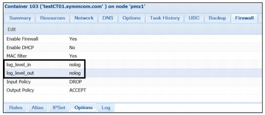
-
Выберите элемент
log_level_inдля регистрации входящего иlog_level_outдля исходящего обмена, а затем кликните наEdit. Это действие откроет блок диалога, как это отображено ниже на снимке экрана, для изменения уровней вариантов ведения протокола: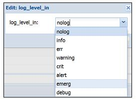
-
Выберите уровень и кликните
OKдля принятия данного изменения. Внашем примере мы выбрали уровеньinfoи для входящего, и для исходящего трафика. -
Кликните на меню с закладками
LogподFirewallдля просмотра журналов для нашего узла или виртуальной машины. Следующий экранный снимок отображает протокол межсетевого уровня для контейнера103в нашем примере кластера: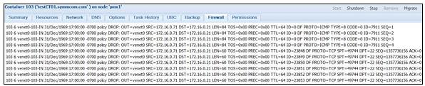
Как это работает...
Уровни ведения журнала отличаются только подробностью протоколирования. Это означает, что в зависимости от выбранного уровня он будет
отображать больше или меньше деятельности межсетевого экрана. В нашем примере мы выбрали уровень ведения журнала
info. Это будет отображать всю активность межсетевого экрана.
Тем не менее, если мы выберем err, то журнал будет отображать
только сообщения об ошибках и ничего более.
Имейте ввиду, что при выборе протоколирования info и для
входящих, и для исходящих соединений, будет регистрироваться все. Это будет создавать многие сотни записей журнала за очень короткие
промежутки времени в зависимости от того, с каким числом активных соединений к узлу или виртуальной машине и от них, будет иметь дело
межсетевой экран. Кроме уровня nolog все другие уровни ведения
журнала будут регистрировать отбрасываемую активность.
Смотрите также...
Для получения дополнительной информации по регистрации в журнал для межсетевых экранов на основе IP таблиц посетите http://gr8idea.info/os/tutorials/security/iptables5.html.